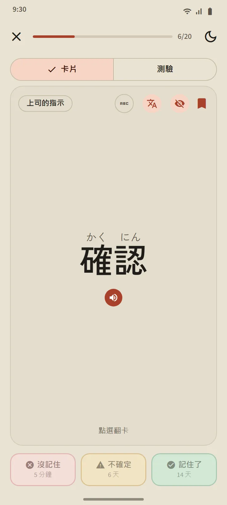
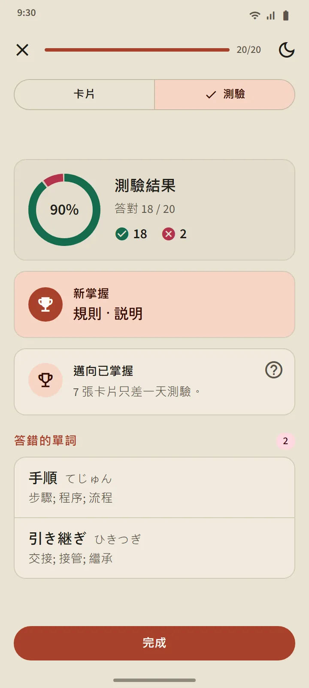
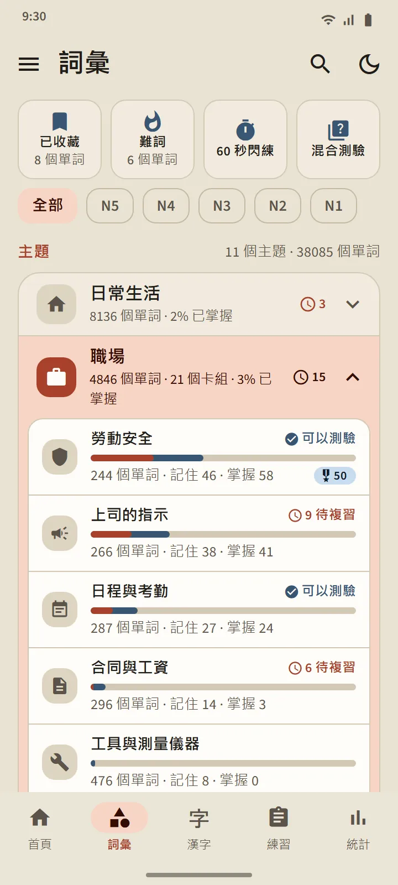
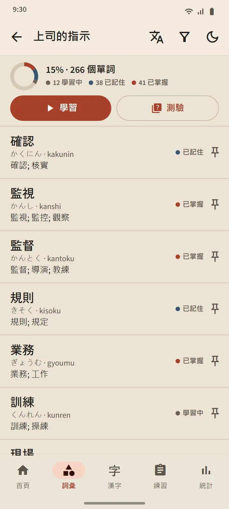
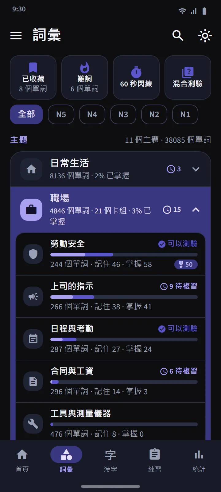
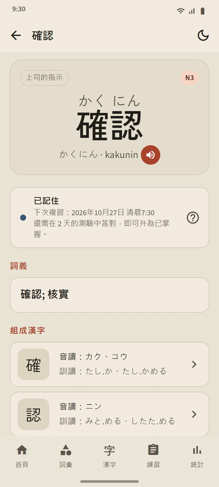

知道你何時快要忘記的記憶卡
卡片正面顯示單字（需要的話可顯示振假名）。點按翻面後會看到讀音、羅馬字、釋義和組成漢字，還有一個發音按鈕。然後用三個按鈕之一給自己打分。
複習安排由 FSRS 完成，這是現代記憶卡 App 所使用的間隔重複演算法。每個按鈕上都顯示這個單字何時再出現：幾分鐘、幾天或幾週後。你越常選「記住了」，間隔就越長。
- 沒記住會讓單字從任何階段退回到「學習中」。
- 不確定會縮短它的間隔。
- 記住了會讓單字升到「已記住」，並把下一次複習推後。

四個階段，「已掌握」要靠實力證明
每個單字都要經過四個階段：新、學習中、已記住、已掌握。在卡片上按「記住了」只能把單字升到「已記住」。要達到「已掌握」，必須在三個不同的日子的測驗中答對。已掌握的單字到期後仍會再次被測試，答錯就會降級。
一個卡組的測驗會在其中 20 個單字達到「已記住」或「已掌握」後開放（單字較少的卡組，只要全部單字都已記住就會開放）。題目是雙向的：由單字選釋義，由釋義選單字。結束時你會看到新掌握的單字、只差一步的單字，以及答錯的單字。


按主題學習，追蹤每個單字
「詞彙」標籤頁分為 11 個大類，每個大類下有若干小卡組。上方的篩選器可以把所有內容限定在某一個 JLPT 級別。每個卡組都有自己的頁面：完成百分比圓環、列出每個單字狀態的單字列表、「學習中」/「已記住」/「已掌握」篩選，以及「學習」和「測驗」按鈕。
職場大類包含 21 個供準備赴日工作者使用的卡組：勞動安全, 上司的指示, 日程與考勤, 合同與工資, 工具與測量儀器, 物流與倉儲, 辦公與文件, 食品加工, 養老護理, 工廠與生產, 工業機械, 電子與電氣, 建築施工, 餐廳與廚房, 農業, 造船, 樓宇清潔, 漁業, 汽車與維修, 航空與機場, 酒店服務。為在日本生活，還有交通、購物與金錢、家居與傢俱等卡組，以及社會與行政和身體與健康大類。
| 大類 | 卡組 |
|---|---|
| 日常生活 | 16 |
| 職場 | 21 |
| 社會與行政 | 8 |
| 身體與健康 | 8 |
| 性格與情緒 | 8 |
| 詞類 | 5 |
| 科技與媒體 | 4 |
| 自然與科學 | 10 |
| 學術與觀點 | 8 |
| 文化與宗教 | 4 |
| 體育與遊戲 | 3 |


特別卡組和快速練習
大類列表上方有三個從所有卡組中抽取單字的卡組：已收藏（你加了星標的單字）、難詞（會自動收入你在卡片上總是忘記、或在測驗中總是答錯的單字）和 60 秒閃練（一分鐘內能做多少張卡片就做多少張）。第四個方塊混合測驗會一次性測試所有卡組中「已記住」和「已掌握」的單字。

收錄 38,085 個單字的口袋詞典
頂部欄的搜尋圖示可以按漢字、假名、羅馬字或釋義查詢任何單字。結果按匹配程度排序，羅馬字搜尋允許一定的拼寫差異：shinbun 和 shimbun、koohii 和 kōhī、arigato 和 arigatou 都能找到同一個單字。每個單字都有詳情頁：它的階段和下次複習時間、釋義、帶讀音的組成漢字，以及發音按鈕。


級別與釋義語言
單字級別是估算的：國際交流基金（Japan Foundation）沒有公佈官方詞彙表，所以級別是根據舊版 JLPT 詞表和使用頻率劃分的。沒有單獨的「JFT」單字級別：JFT-Basic 考察的是與 N5、N4 相同的基礎詞彙，再加上職場用詞。
釋義已完整覆蓋 15 種語言，包括韓語和繁體中文。釋義語言可以在設定中與介面語言分開選擇。
| 級別 | 單字數 | 免費 |
|---|---|---|
| N5 | 1,030 | 1,007 |
| N4 | 2,044 | 1,503 |
| N3 | 11,230 | 4,097 |
| N2 | 11,309 | 2,290 |
| N1 | 12,472 | 503 |